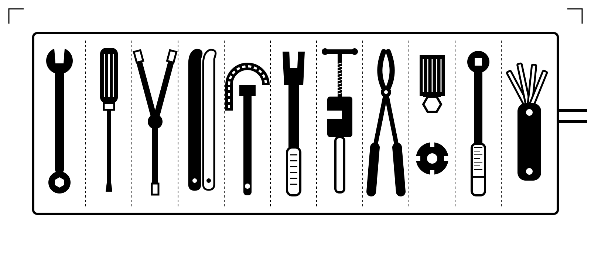
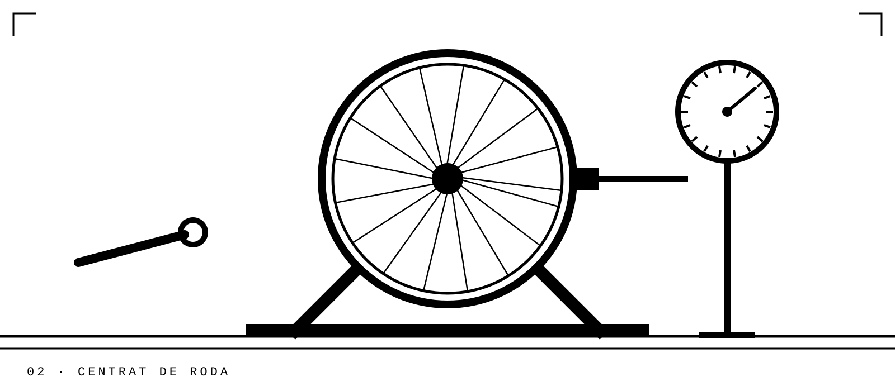
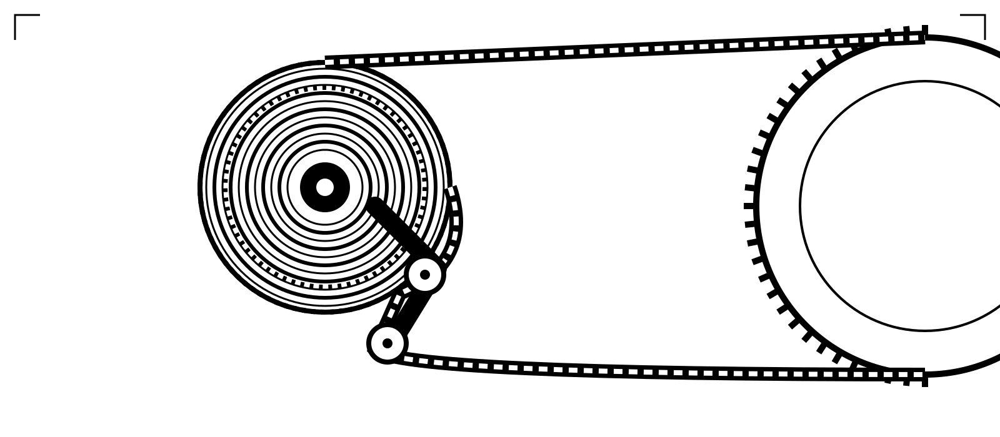
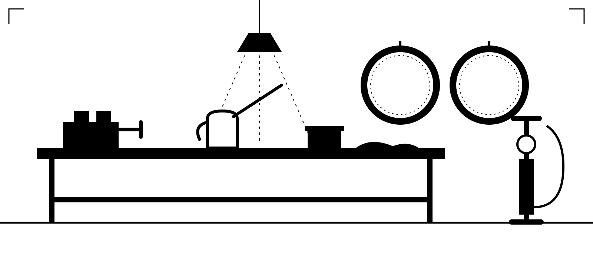

We do all sorts of repairs and maintenance, from a quick puncture to a full strip-down and rebuild. Road, gravel, mountain, e-bike, city or a forty-year-old steel classic: if it has wheels and pedals, we'll look after it.
Every bike gets the same care: cleaned, checked bolt by bolt, adjusted until it runs silently, and test-ridden before you collect it. Passing through on a tour? Tell us, and we'll get you back on the road as fast as we can.
Labour prices from January 2027, VAT included. Parts are charged separately, and we always ask before fitting anything.
Spring gets busy, so book a week or two ahead.
Send us your bike, the problem and a photo if you can. We usually reply the same day.